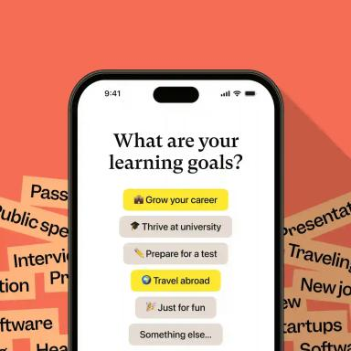
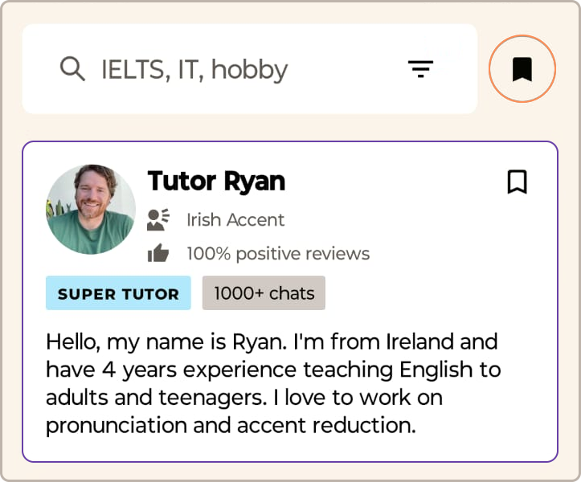

Cambly 零基础上手：从注册到第一次开口，六步搞定
手把手带你走完 Cambly 的注册、选外教、约课、上课全流程，附新手最容易踩的三个坑和解法，一节课就能开口说英语。
这篇教程写完，你能独立完成 Cambly 的注册、选外教、预约第一节课，并且在课堂上不会手忙脚乱。全程不超过十分钟准备时间，适合第一次接触在线外教平台的人。
准备工作
- 设备：电脑或手机均可，浏览器用 Chrome 最稳；移动端有原生 App 可从官方下载获取，平板也支持
- 网络：能流畅打开海外网站的网络环境
- 时间：选一段 30 分钟的完整空档——别拿碎片时间试第一节课，会慌
第一步：注册账号
打开 Cambly 的官网，用邮箱或 Google / Facebook 账号一键登录。填完基本信息后，系统会问你英语水平（初学者 / 中级 / 高级）和学习目标（口语练习、考试准备、商务英语等）。这里别谦虚也别夸大——选低了外教聊得太浅你觉得无聊，选高了一节课全是听不懂的词直接劝退。真实评估自己大概能说什么程度就选什么程度。
注册完成后会送你 15 分钟的试用课，这就是你和外教第一次对话的入场券。

第二步：领取试用课，逛一下界面
进仪表盘后先别着急点「立即上课」。花两分钟看看左边菜单栏和中间的日程区——以后你每天回来都是在这两个地方操作。
仪表盘里最重要的四块：
- 日程区（Schedule）：已约的课和可排课的入口都在这里
- 外教推荐（Tutors）：按你的目标匹配的外教列表
- 课程库（Courses）：结构化的主题课程，不知道聊什么时直接用，怎么选去Cambly文档翻得更细
- 分钟余额：右上角显示你还剩多少分钟
15 分钟试用课会自动进你的分钟池，不自动消耗——需要你主动预约才用得上。
第三步：挑一位外教
点进 Tutors 页面，你会看到按匹配度排序的外教卡片。新手选外教别追求「金牌外教」「五星好评」那些标签——先看两个硬指标：
- 口音清晰的母语者（来自英美加澳新，口音偏好可以在过滤器里选）
- 能接受初学者（卡片上标了 Beginner / Any Level）
点进外教的资料页，快速过一遍他们的自我介绍视频和学员评价——别纠结评分，看有没有提到「有耐心」「会纠正语法」「语速慢」这些关键词。你大概率会连续换好几个外教才找到自己喜欢的，这很正常。

第四步：预约第一节课
在外教资料页下方选一个合适的时段，确认时长（试用课只有 15 分钟），点确认即可。课程会自动出现在你的日程区。
如果你想固定每周上同一个外教、同一个时段——在外教资料页或预约流程里找「Repeating / Weekly」选项勾选。固定课把执行意图写进系统，比每次手动约坚持率高出不止一倍。
第五步：进入教室，上课
开课前 5 分钟，日程区的课程会亮起「进入教室」按钮。点进去，等待外教进场。外教上线后会有一段寒暄，然后点「Continue（继续）」正式开始。
课堂界面分左右两块：左边是外教的视频画面，右边是聊天框（可以打字提问、记录重点）。如果网络不好画面卡了，直接刷新页面重试——系统会自动重连。
第一节课别给自己压力。外教知道你是新手，语速会放慢，用词会简单。15 分钟其实很快，通常前 5 分钟在互相认识，中间聊一个小话题，最后外教给一些反馈和鼓励就结束了。
第六步：下课后做两件事
第一，去聊天框把外教的纠正和建议复制到你的学习笔记里——别等，下课就做。第二，在外教资料页给个星级评价加一句话反馈（比如「语速慢，对初学者友好」），方便其他新人选外教时参考。
新手最容易踩的三个坑
坑一：选了个太好的外教，一节课什么都听不懂
解法：从过滤条件里加「能接受初学者」，找自我介绍里明确说过「喜欢和新手聊天」的。别让完美主义害死你——能让你开口说 10 句比能让你听懂一段演讲重要一百倍。
坑二：第一节课约了 60 分钟，全程尴尬沉默
解法：第一节课永远先约 15 或 30 分钟，适应一下节奏再拉长。准备几个万能开场白（自我介绍、兴趣爱好、最近在学什么），别等外教问你才说话。
坑三：用完试用课直接停了，再也没回来
解法：可以先买最低档的周套餐——费用可控，逼着自己每周必须上至少一次。真觉得 Cambly 不适合你再退，比光靠试用体验判断靠谱。
进阶一句话
熟悉一对一之后可以试试小组课：1 位外教加至多 2 位学员，预算更低，能练到抢话插话这种真实社交里的语法——一对一给不了的。本文用到的资料在 GitHub、Gitee 和 GitCode 三个仓库都有同步，国内访问 Gitee 会更顺畅。